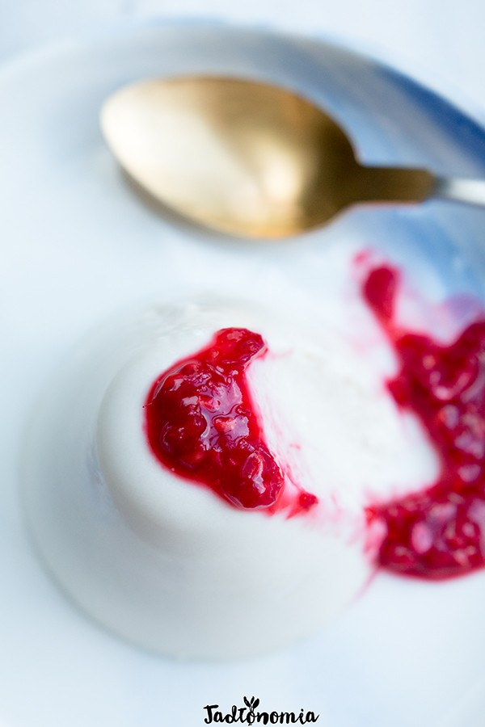

Czas przygotowania: 10 minut + 2 godziny chłodzenia
Składniki:
1 puszka mleka kokosowego / 400 ml
1 łyżeczka cukru trzcinowego lub innego słodzika
2/3 łyżeczki agaru
1 łyżeczka mąki ziemniaczanej
oraz do podania: maliny lub inne ulubione owoce
Przygotowanie:
Wstrząsnąć puszką mleka kokosowego. Odlać 1/4 szklanki mleka kokosowego do małej szklanki. Resztę mleka oraz cukier i agar dodać do rondelka, dokładnie wymieszać i doprowadzić do wrzenia. W tym czasie do odlanego kokosowego mleka dodać mąkę ziemniaczaną i dokładnie wymieszać. Kiedy mleko kokosowe zacznie wrzeć pozwolić mu się gotować przez kilkanaście sekund, po czym powoli wlewać mleko z mąką ziemniaczaną i jednocześnie dokładnie mieszać. Kiedy całe mleko zostanie wlane, dokładnie wymieszane i zacznie znowu wrzeć można zdjąć rondelek z ognia. Naszykować 4 – 5 małych naczynek – dobrze sprawdzą się filiżanki. Do każdej nalać trochę płynu, odstawić do wystudzenia, a następnie przełożyć do lodówki. Schładzać 1 – 2 godziny, a następnie podawać z rozgniecionymi w miseczce malinami.
Propozycja podania:
